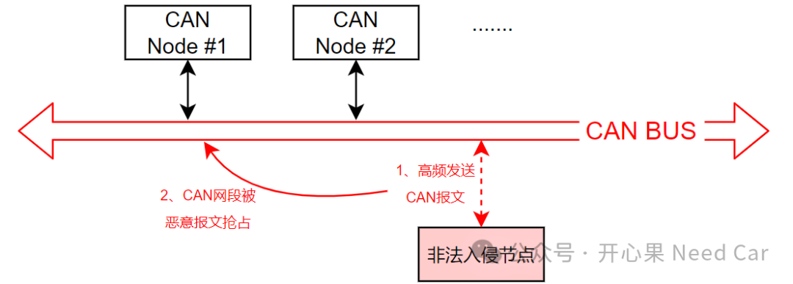
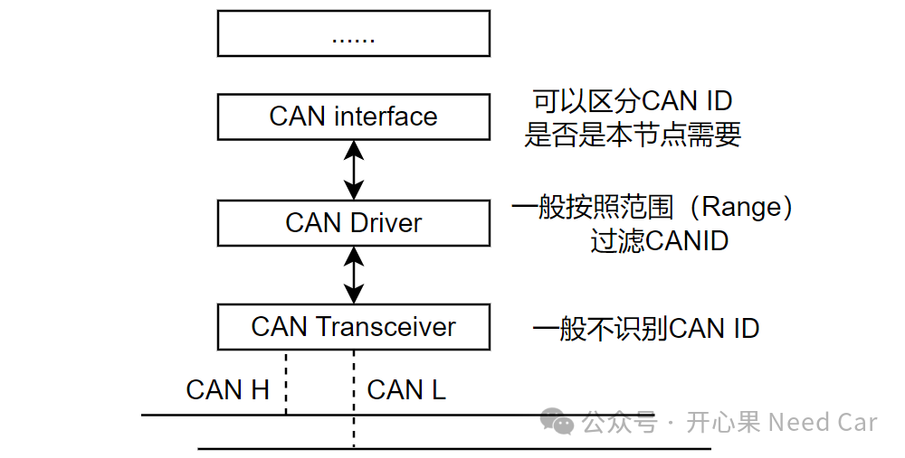
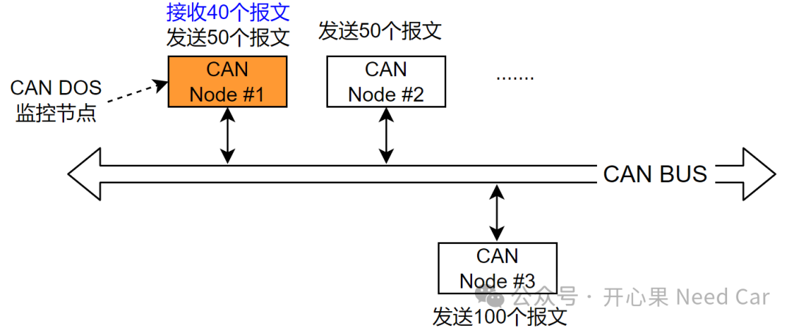
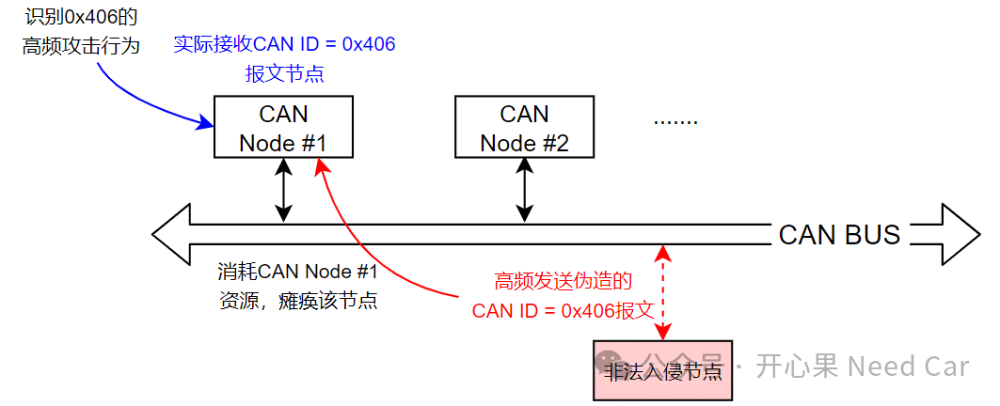

前文《信息安全，悄然兴起的CAN IDS是什么？》聊过CAN IDS（Intrusion Detection System，入侵检测系统），主要讨论了对于CAN总线的攻击方式。需求对应的场景明确以后，接下来就是讨论软件实现问题。本文聚焦CAN DOS攻击场景，讨论一下实现的难点以及可行的方案。
首先，CAN DOS（Denial of Service，拒绝服务）就是在某个CAN网段，非法发送大量CAN报文，进而瘫痪CAN网络的正常通信行为，示意如下：

所以，就针对高频发送CAN报文这个行为可以进一步拆分出两种场景：
（一）发送的高频CAN报文在通信矩阵中
举例：CAN ID = 0x666的CAN报文在CAN的通信矩阵中，即：有节点发送0x666报文，有节点接收0x666报文。如果0x666的通信周期，正常是100ms，被恶意攻击时，0x666以1ms周期发送，这属于一种DOS攻击场景。
做过SecOC（Security Onboard Communication，板间通信）的小伙伴可能会说，SecOC可以通过新鲜度值（Freshness Value）识别重放攻击。但是，对于MCU资源的控制器，SecOC报文毕竟是少数，只能针对安全要求高的报文进行SecOC保护，如果大面积的保护，对通信带宽和系统性能影响将会是致命的。毕竟SecOC报文需要MAC（Message Authentication Code）和新鲜度值（Freshness Value）的计算和校验，对于发送和接收双方资源开销都是极大的。注意，如上我们在要论DOS攻击，SecOC目前还识别不出DOS攻击，所以，对于DOS攻击，不能依赖SecOC探测。举例：CAN ID = 0x01的CAN报文不在CAN通信矩阵中，即：没有节点发送0x01报文，也没有节点需要接收0x01报文。当CAN 网段被恶意攻击时，0x01的CAN ID报文以1ms周期发送，该行为也属于一种DOS攻击场景。所以，如果要探测出CAN总线是否有DOS攻击，就意味着所有CANID都需要被识别，并且需要上层软件识别CAN ID。为什么这么说呢？示意如下：
对于CAN Transceiver，一般不对CAN ID进行过滤，即：总线上的信息，它只进行数字信号和模拟信号的转换。当一帧报文转换成数字信号以后，会送给CAN Driver，如果要识别出是否有DOS攻击，CAN Driver必须先完整的将CAN报文接收，所以，这就要求CAN Driver不能对CAN报文进行过滤，否则，就无法探测出CAN的DOS攻击。
如果CAN Driver将所有CAN报文完成接收，就会面临这样一个问题：如果CAN接收是中断接收，意味着，该CAN节点在正常通信情况下，也会增加中断的频次。为什么会增加CAN中断的频次呢？示意如下：
CAN Node#1如果不是CAN DOS攻击的监控节点，只会针对接收的40帧报文触发接收完成中断，其余报文可以被CAN Driver过滤掉。CAN Node#1如果是CAN DOS攻击的监控节点，它需要将所有CAN ID进行接收并识别。如果使用中断接收，正常通信时，不管是CAN Node#2还是CAN Node#3发送的报文，CAN Node#1均会接收，并且接收完成以后，会触发接收完成中断，所以，这将极大的增加CAN Node#1的中断频次，进而增加CPU的开销，降低CAN Node#1的性能。那么，使用Polling方式接收呢？使用Polling模式接收，也意味着CAN Node#1每个周期（eg：5ms）需要处理更多的报文，不仅增加CPU的开销，而且增加内存的开销（需要缓存更多的接收报文）。如上的讨论可以看出，CAN DOS探测的软件实现会影响节点的性能，是不是意味着这个功能不能落地呢？在实际的项目中，需求和落地需要做一个折衷，如果CAN DOS探测必须上，就意味着在实现方案上需要进行讨论，即：CAN DOS探测的实施不能影响已有的功能，或者影响的范围需要在可接受程度内。怎么做呢？如果要CAN网段内的一个节点接受所有的CAN ID，并识别是否属于CAN DOS攻击，势必极大的牺牲该节点的性能。所以，不妨让CAN网段内的所有节点都参与进来，每个节点进行一个CAN ID网段监控。
某个CAN网段，0x00~0x20、0x40~0x100、0x200~0x256...属于非通信矩阵内报文，示意如下：
如此，在正常通信工况下，每个节点分管一段CAN ID（不属于通信矩阵）进行监控，且不影响之前的接收策略。那么，如果攻击的CAN ID在通信矩阵中，如何识别呢？这个监控功能由对应的接收节点识别并上报，示意如下：

如上，CAN Node#1接收0x406报文，如果0x406高频攻击CAN网段，则应由CAN Node#1识别出该攻击行为，并将识别的攻击在合适的时机上报车机系统。
点击下方关注，一起聊聊Autosar/嵌入式，如果需要，联系作者进群，给你更专业的解答